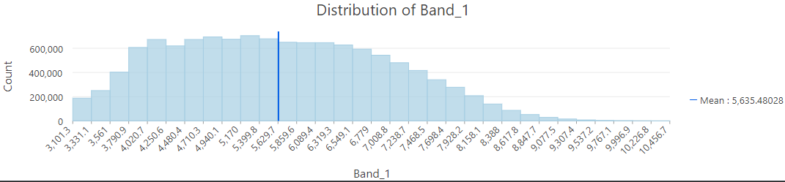
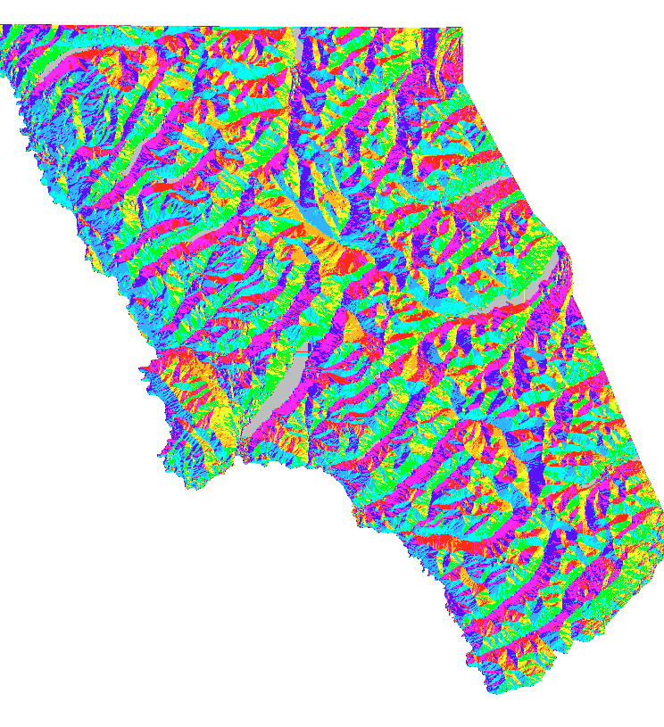
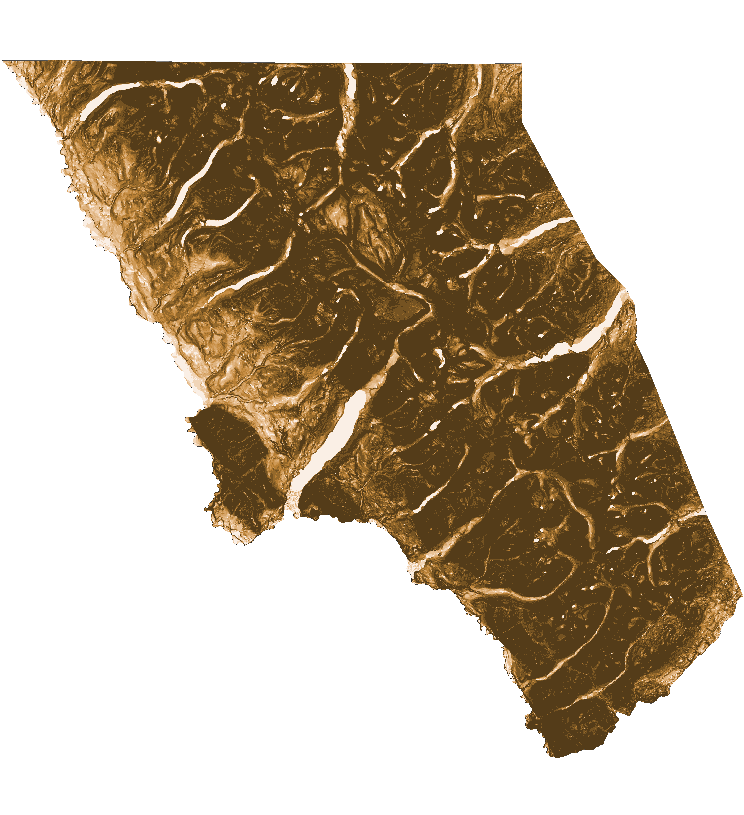
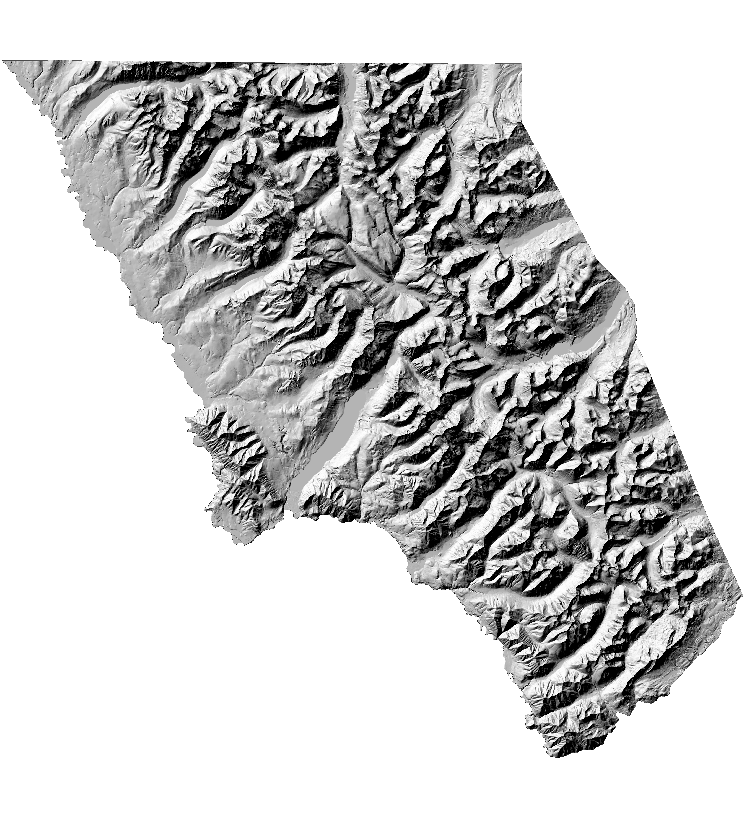
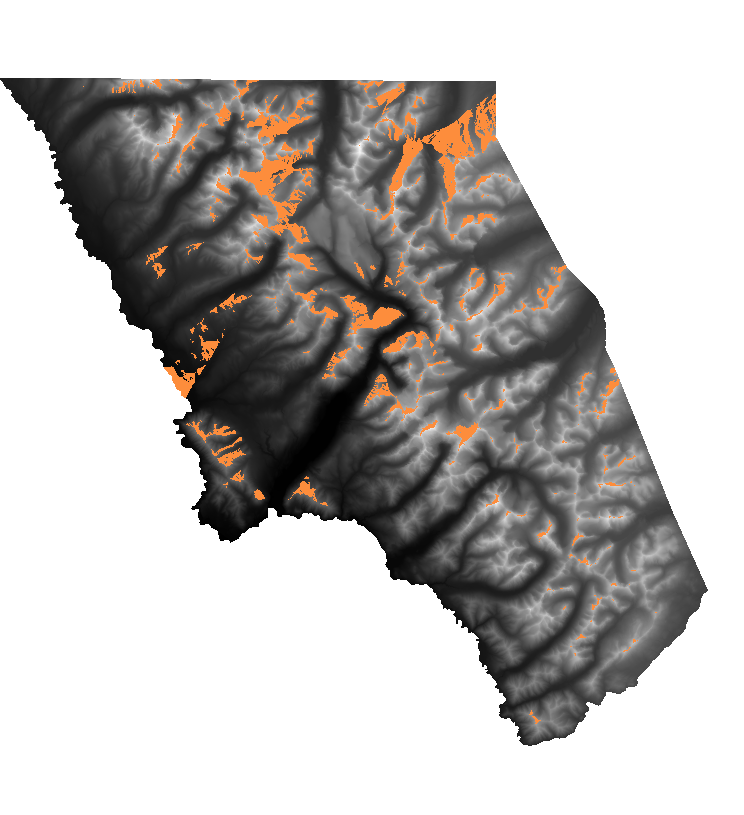
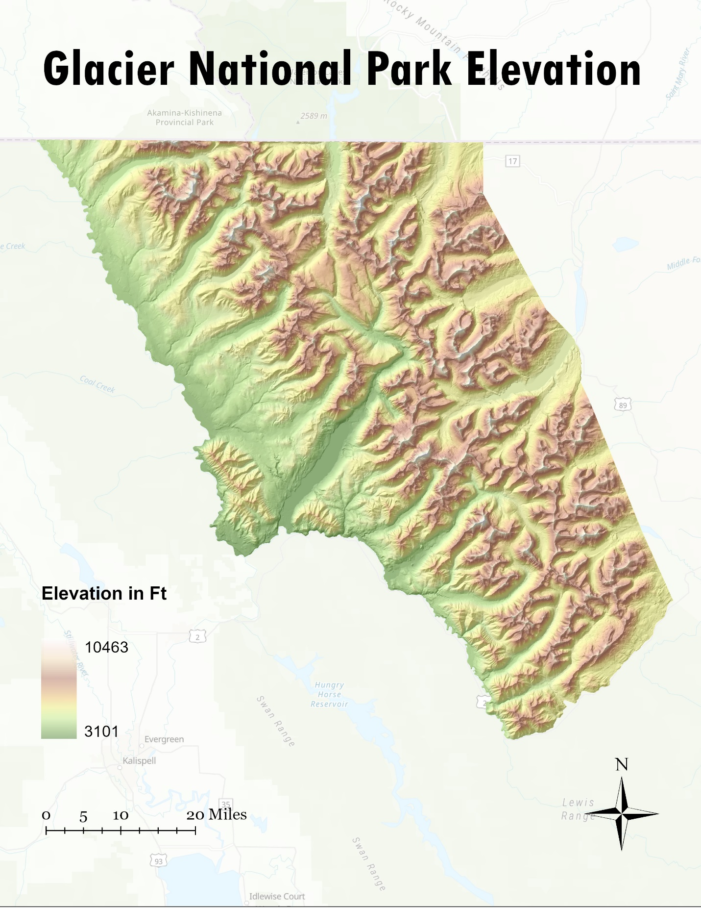
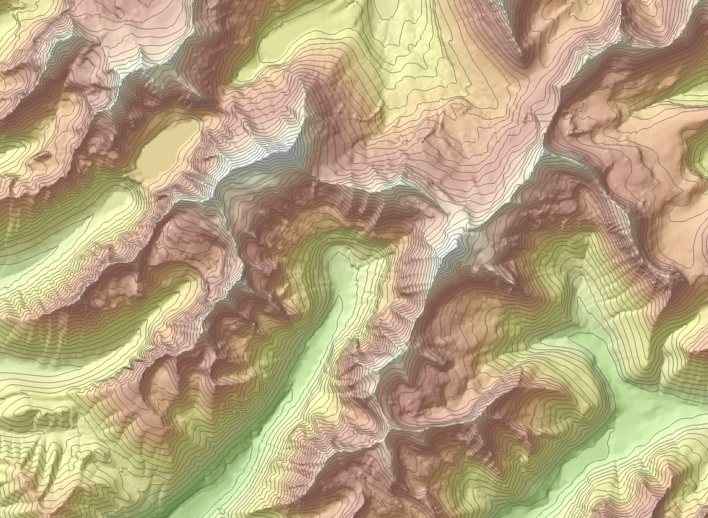

GIS Coursework / GIS II / Glacier NP Elevation
Glacier NP Elevation







Overview
Analyzed the elevation distribution across Glacier National Park using a digital elevation model.
Process
Exported a 30m DEM for the park boundary, converted it to feet, and generated an elevation histogram with summary statistics (mean, median, min, max).